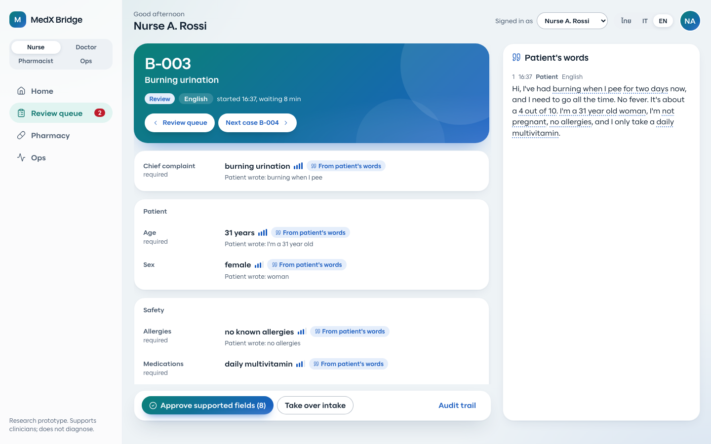
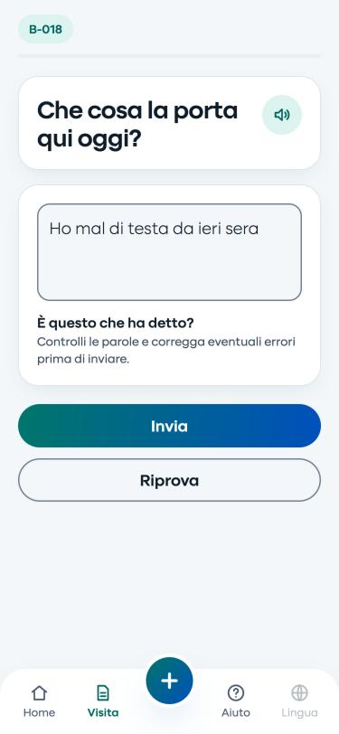
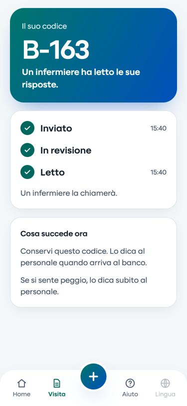

M
AMD Developer Hackathon ACT III · Track 2
MedX
Bridge
Multilingual intake where every field points back to the patient's own words.
Research prototype. Synthetic data. Supports clinicians; does not diagnose.


